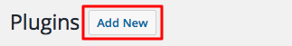
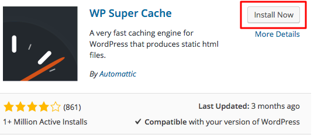
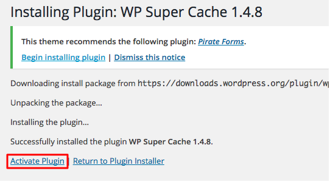
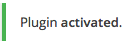
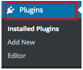

Como adicionar plugins em um site estático
O que é plugin
Na prática, o que significa plugin? Na informática, ele é definido como um programa, extensão ou ferramenta que pode ser adicionada no programa principal (seu site, por exemplo), que incrementa recursos adicionais a ele sem comprometer o seu funcionamento.
Como Instalar Plugins Gratuitos do WordPress do Diretório Oficial de Plugins
- Acesse o painel do WordPress e navegue até a seção Plugins.
- Clique no botão Adicionar Novo, ele está localizado na parte superior da página. 
- Você pode navegar por plugins usando as tags Popular, Destaque ou Recomendada que estão localizadas na parte superior da página ou usar o campo de pesquisa. Se você já sabe qual plugin você deseja instalar, digite seu nome ou palavra-chave relacionada no campo de pesquisa e pressione o botão ENTER. No nosso exemplo vamos instalar WP Super Cache Plugin.
- Agora pressione o botão Instalar próximo ao plugin que deseja instalar. 
- Os plugins instalados recentemente são desativados por padrão. Para prosseguir e ativar o plugin, clique no botão Ativar. 
- É isso, você acabou de instalar e ativar o seu primeiro plugin! 

Como integrar um formulário de contato em um site estático
Existem várias maneiras de integrar um formulário de contato em um site estático. Uma opção é usar um plugin simples de usar que ofereça Templates prontos para adicionar ao seu site. Outra opção é usar um serviço como o Formspree ou o Formsquash, que permite criar formulários para sites estáticos. Com ele, você pode apontar seu formulário para a URL fornecida pelo serviço e receber respostas no seu formulário Para adicionar um formulário de contato ao seu site estático no GitHub usando o Formspree, você pode seguir os seguintes passos:
- Crie uma conta no Formspree e configure um novo formulário
- Adicione o código HTML do formulário fornecido pelo Formspree à sua página de contato no repositório do GitHub.
- Quando os visitantes do seu site preencherem e enviarem o formulário, as respostas serão enviadas para o endereço de e-mail que você especificou ao configurar o formulário no Formspree.